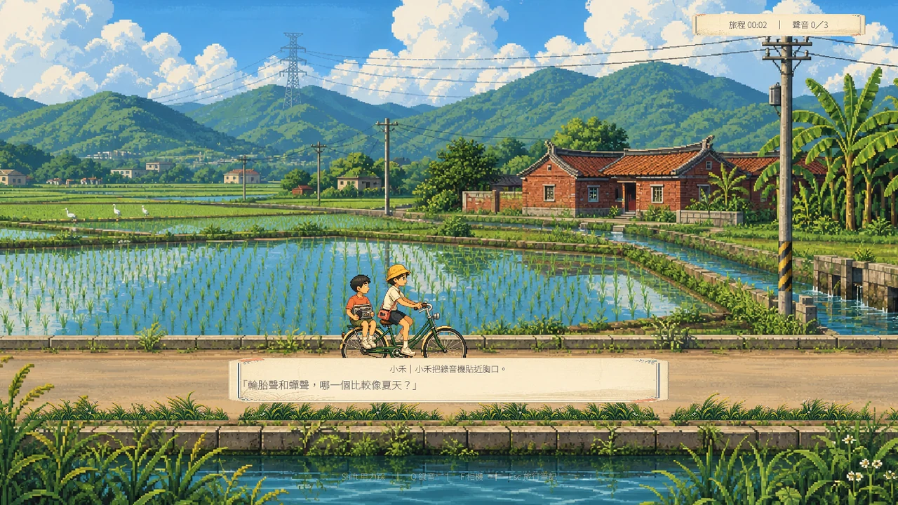
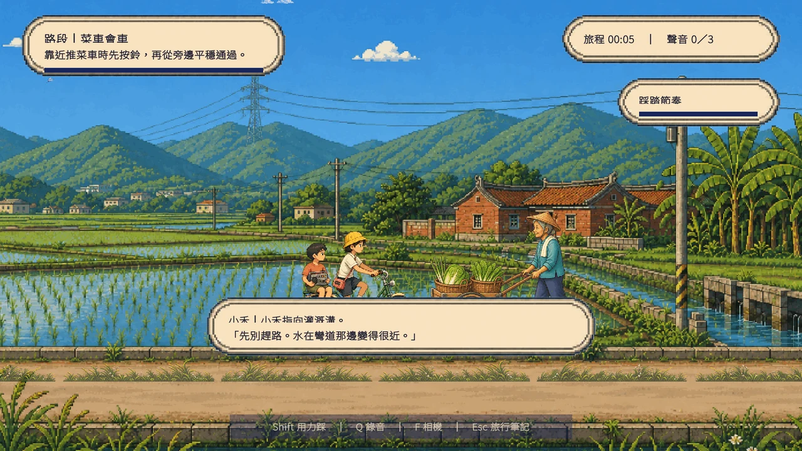
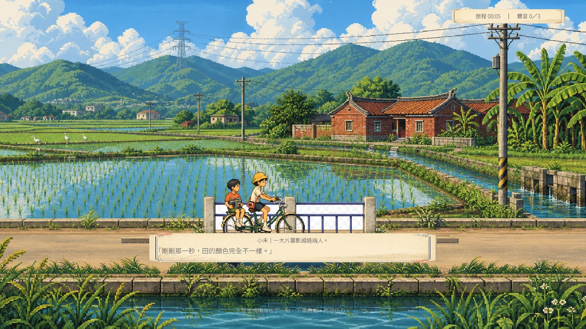
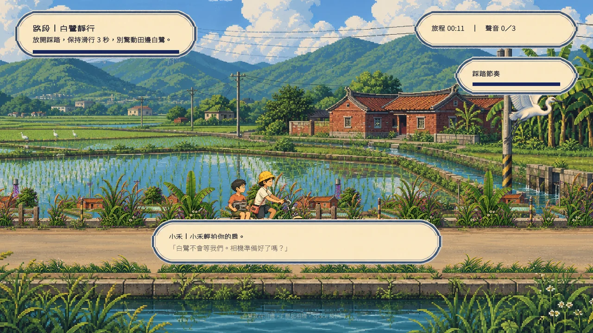
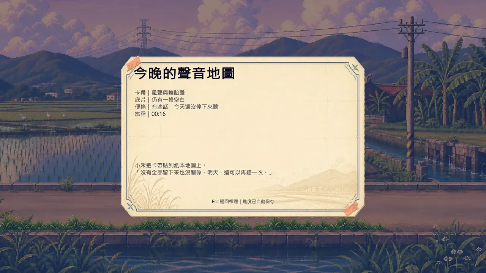

15 分鐘完整單一路線旅程
4 種正向回饋路段挑戰
3 層遠中近景視差移動
10 狀態騎乘逐格動畫
Core Experience
騎行不是趕路，是感受路
按住就能輕鬆前進，抓準節奏則會騎得更流暢；短挑戰提供變化，但錯過不會懲罰或卡住旅程。
01
從撐地到踩踏
待機單腳落地，第一腳推行後才進入雙腳踩踏；滑行、煞車、按鈴也各有獨立逐格狀態。
02
路上四種小挑戰
順風連踩、農產推車前按鈴超車、橋前煞車與白鷺旁滑行，讓十五分鐘的路程有收放與目標。
03
遠中近景一起走
遠山慢移、田野中速、近景草叢快速掠過，再配合六段鏡位、色溫與沿路角色，強化速度與距離感。
Interactive Journey
午後，直到山線亮起來
切換同一段旅程的時間氣氛，看看水田、遠山與光色如何改變騎行的情緒。
午後水田
稻浪、電線桿與水圳把視線帶往遠方。
Field Notes
路上的四次停留
正式遊戲畫面取自 Windows Player 的 1536 × 864 執行期巡場，網站版縮為 1280 × 720。




Build Evidence
已完成的工程驗證
以下數字來自本機 Unity、Windows Player 與 WebGL 的實際結果；自動化不取代真人手感簽核。
可回溯的垂直切片
87 / 87Unity 自動驗收
9 / 9手機觸控操作
15.0 分鐘全速路線下限
40.8 MBWebGL 建置大小